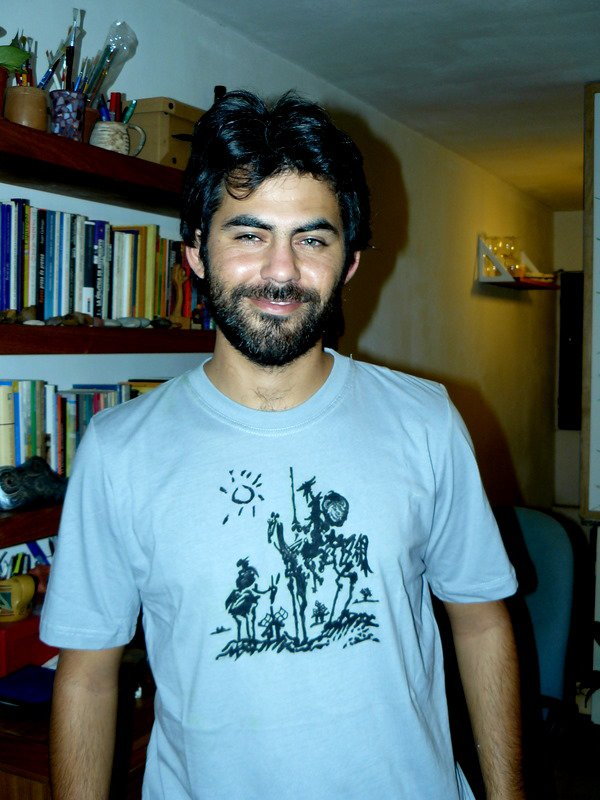
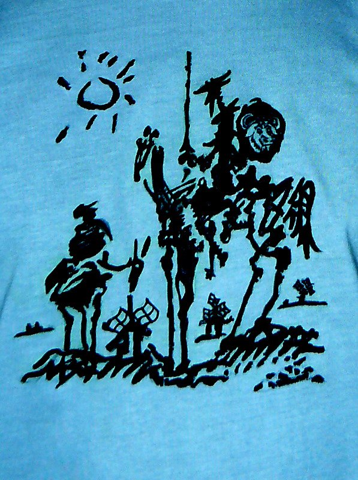

El Quijote del Software Libre
Durante los ultimos años de facultad me he ganado ciertos apodos, algunos más buena leche que otros, relacionados con mi postura y militancia respecto al Software Libre.
Esta postura se mezcla (se complementa) con otras posiciones políticas que he manifestado y defendido reiteradamente con profesores y compañeros, que son intrínsecas a la formación y el perfil de ingenier@s que se forma en la universidad pública, con la que suelo disentir. Muchas de esas discusiones, están publicadas en mi otro blog
La semana pasada una amiga comentó un mensaje que dejé en Facebook avisando que había terminado la tésis.

Inspirado en ese comentario de Lu, Nati (mi novia) me pintó esta remera como regalo de cumpleaños (que es mañana).
Claro que yo no salgo muy favorecido (cansancio y flash no hacen buen equipo). Pero la remera está buenísima. Acá el detalle:
En la espalda podría ir esta cita :
"La libertad, Sancho, es uno de los más preciosos dones que a los hombres dieron los cielos; con ella no pueden igualarse los tesoros que encierra la tierra ni el mar encubre; por la libertad, así como por la honra, se puede y debe aventurar la vida, y, por el contrario, el cautiverio es el mayor mal que puede venir a los hombres."
Don Quijote, capítulo LVIII, segunda parte
El código de este artículo está disponible en github. ¿Encontraste un error? Por favor, enviame un pull request.
Comentarios
Comments powered by Disqus